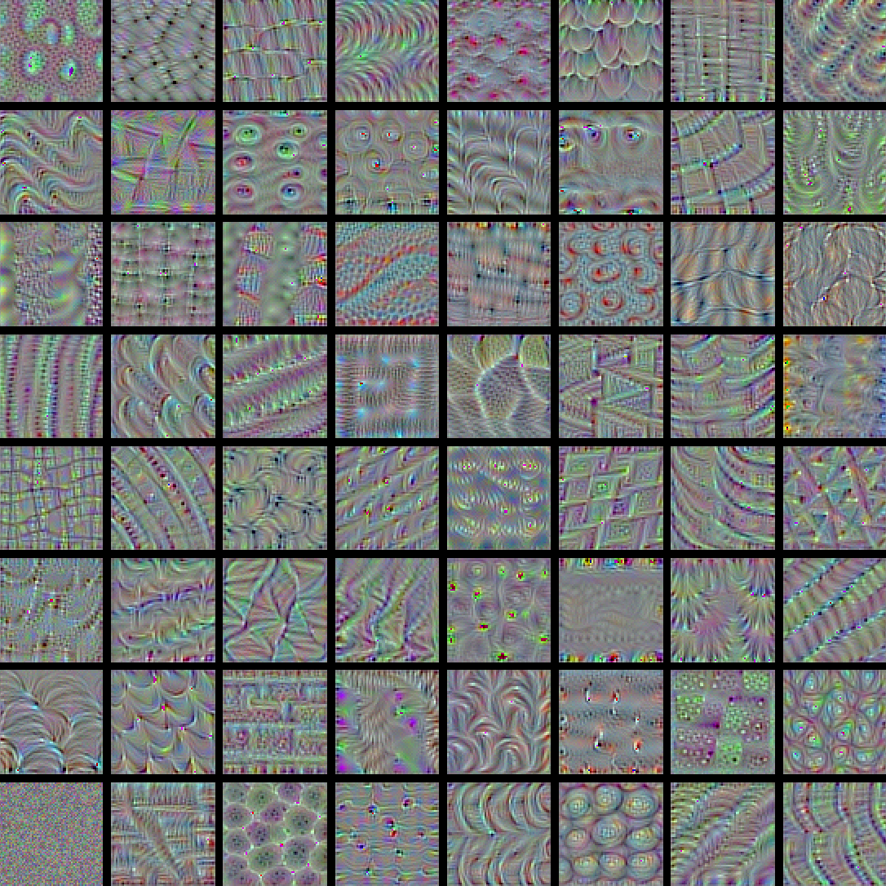
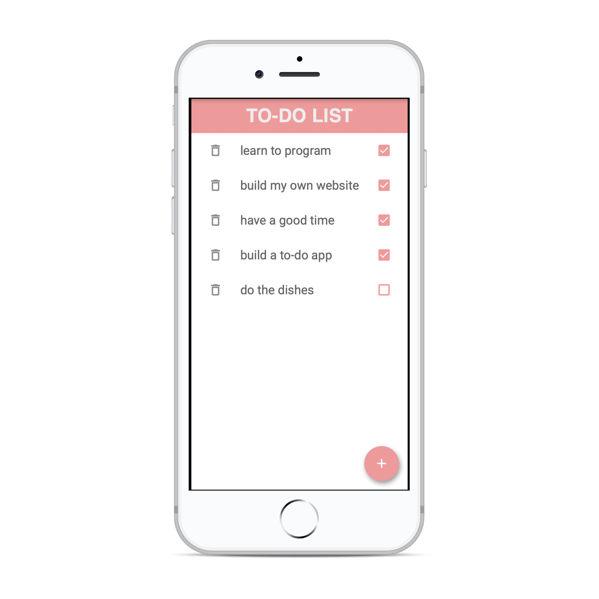

Work
Data Scraping
For the last couple of months I worked on a research project about the Evolution of Human and Machine Intelligence.
I mostly contributed by scraping various data sources, cleaning, and reorganizing the data.
from bs4 import BeautifulSoup
from urllib.request import urlopen
The research is still ongoing and will likely lead to a published Journal Paper in the next couple of months. At this point I can share the code and the data sets that contributed to the foundation of the research.
Technologies: Python, Anaconda, HTML, BeautifulSoup, urllib, OAI-PMH, Pandas, Numpy
ConvNet Filter Visualization
At the moment I am working alongside
Prof. Dr. Loecher
(BSEL)
on Convolutional Neural Networks. We are trying to better understand the process that takes place in each layer and dimension as a CNN
tries to classify an image.

Additionally, we take a closer look on the impact the feature importance has on each feature in the network. This work
will likely lead to a Blog post in the near future.
Technologies: Python, JupyterHub, Keras, SHAP, XGBoost, matplotlib, Numpy, Git
Statistics & Econometrics Online Course
A few months ago I co-produced a few online courses on Statistics and Econometrics.
The courses provide material to revise the concepts you would encounter in a typical "Statistics I", "Statistics II" and "Introduction to Econometrics" course.
If you want to refresh your statistics or
econometrics knowledge, you can do so there. It is free to use for any student of the Berlin School of Economics and Law (as a BSEL Moodle account is required at the moment).

Technologies: Moodle, LaTeX, HTML
University
App Development
I created a minimalistic To-Do App written in Dart and crafted with
Flutter.
Flutter is a UI toolkit for building iOS and Android applications at the same time.
Using the App you can add tasks, check them off and delete them after you are done.

It's beautiful. It's easy. Give it a try!
Technologies: Dart, Flutter, Android Studio, Xcode, Git
Classification of Amazon Star Reviews
As part of the Applied Data Science exam I built a Recurrent Neural Network to predict Amazon ratings based on the written text review.
As part of the preprocessing step any non-alphabetic characters, HTML tags, etc were removed. Additionally tokenization and lemmatization was applied. For the Word2Vec implementation gensim was used. The RNN outperformed a simple Neural Netowrk and the benchmark model (simple Logistic Regression).
Technologies: Python, Anaconda, Word2Vec, scikit-learn, Keras, matplotlib, Numpy, Pandas
Dimensionality Reduction on Mass Spectrometry Data
Mass Spectrometry measures the mass of molecules in the body. The data obtained provides measurements of about 10,000 different molecules.
That information may provide insights about diseases of a patient.
As part of the Machine Learning exam we were given an anonymised data set consisting of 100 patients. The task was to identify cancer-related
proteins or combinations of proteins. As only a small number of proteins may influence diseases, the main task was dimensionality reduction.
Technologies: Python, Anaconda, scikit-learn, matplotlib, Numpy